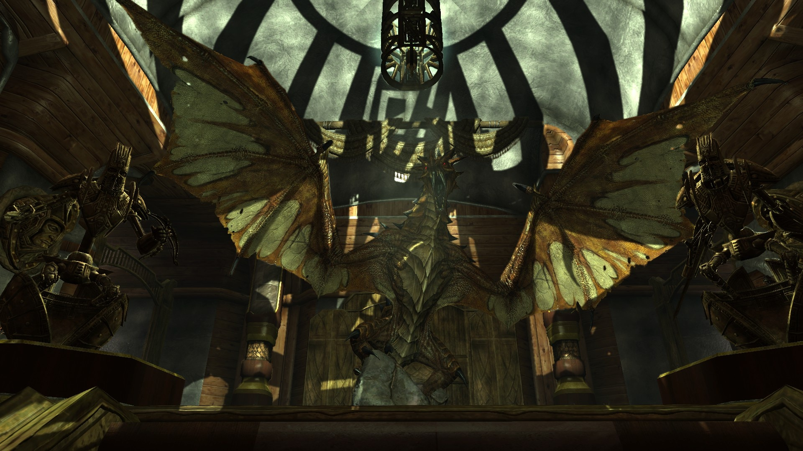

The Elder Scrolls V:Skyrim
What is Modding for?
Mods, short for modifications, are player-created in-game content that can range from small bug fixes and typo corrections to massive projects that completely transform how a game looks or functions. Players create mods by modifying existing in-game content, allowing for a wide range of possibilities such as quality-of-life improvements, new areas, animations, gameplay systems, enhanced graphics, and more. The scope of mods is virtually limitless, as they can add an unlimited amount of content to a game, providing new ways to play and enhancing the overall gaming experience for free.
For extra content

For immersion
For Fun